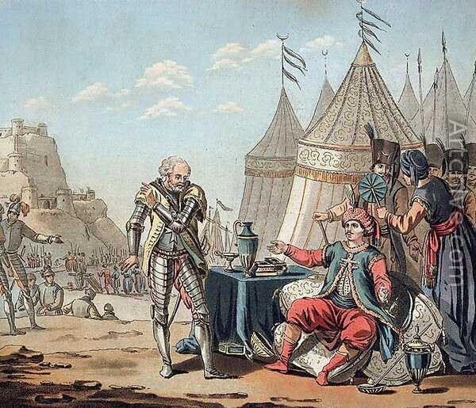
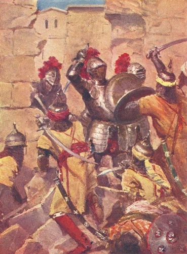

С каким настроением шли госпитальеры на переговоры с султаном? 13 ноября 1522 года великий магистр де л’Иль-Адам написал своему племяннику Франсуа де Монморанси, что обстановка остается очень сложной. Больше всего его беспокоят мины, особенно те из них, которые закладывают под стены крепости. Магистр пишет о пятидесяти заложенных минах, из которых десять туркам удалось взорвать. (Если обобщить данные из всех доступных источников, то количество заложенных мин меняется от 38 до 55. (Kenneth M. Setton, The. Papacy and the Levant. (1204-1571). Vol. IV, p. 209)). Магистр также пишет о болезнях, свирепствующих в лагере турок. По его оценке, общие потери войск султана достигли уже 50 000 человек. Однако султанский диван на заседании 31 октября принял решение зимовать под стенами Родоса. Поэтому, продолжает де л’Иль-Адам, если не удастся получить помощь от короля Франции, «не остается уже возможностей, чтобы противостоять громадной силе турок».( Charrière, Négociations de la France dans le Levant, tome I (1848), pp. CXXXI-CXXXIII). Почти вся южная часть стены вокруг города была разрушена турецкой артиллерией и минами. Защитники разбирали городские дома, чтобы полученными камнями заполнять бреши. Но уже не хватало людей, чтобы занять все посты на стенах. Велики были страдания мирных жителей города. Делегации как греков, так и латинян неоднократно прибывали к великому магистру, моля его подумать о судьбе их жен и детей.

В этой обстановке собрался очередной совет рыцарей ордена под председательством великого магистра. Совет заслушал «экспертов». Первым взял слово М. де Сен Жиль, который отвечал за обеспечение защитников крепости боеприпасами и порохом. Он сказал, что у него уже нет людей, чтобы переносить артиллерийские орудия с позиции на позицию и подносить боеприпасы, а также нет пороха, чтобы отразить возможную атаку турок. Он высказал свое мнение, что город уже потерян. (Небольшое замечание относительно пороха. Действительно, турецким саперам и артиллеристам удалось взорвать почти все мельницы на молу вокруг родосской гавани, которые мололи исходные материалы, необходимые для изготовления пороха. Но нам известно, что в подвалах церкви св. Иоанна находился нетронутый пороховой склад. Почему де Сен Жиль ничего не сказал о нем – непонятно.) Вторым выступил Габриеле де Мартиненго. Он описал состояние крепостных стен. Наибольший пролом длиной более 30 м занят турками и восстановить его уже невозможно. Под угрозой захвата находятся еще две бреши в стенах. Большая часть рыцарей и бойцов регулярных формирований ордена погибли. (По некоторым данным, в крепости осталось 1500 человек, способных носить оружие (Fontanus, De bello Rhodio, II, f.36)). Боеприпасов практически не осталось. Он поддержал мнение де Сен Жиля о невозможности отстоять город в случае нового турецкого штурма. Великий магистр и рыцари-члены совета приняли во внимание мнения экспертов, однако конкретного решения пока принимать не стали. В продолжившейся дискуссии основное внимание было уделено вопросам сохранности реликвий ордена и имущества жителей города. Нашлось много членов совета, которые высказали желание умереть за веру, однако большая часть рыцарей высказалась за капитуляцию, чтобы спасти жизни «простого народа» (menu peuple), беззащитных женщин и маленьких детей. При этом они ссылались на примеры Модона и Белграда.
После обдумывания результатов дискуссии было принято решение капитулировать.
Выше мы уже сказали, что произошло 10 декабря. После обмена белыми флагами в крепость было доставлено письмо от султана. Великий магистр зачитал его на совете ордена. В письме говорилось, что если город будет сдан сейчас, все рыцари и пожелавшие жители любого сословия смогут оставить Родос со всем своим движимым имуществом, не опасаясь противодействия османских войск. Султан давал в этом личные гарантии, подкрепленные «его подписью, сделанной буквами из золота». Совет решил принять эти условия. В лагерь Сулеймана были направлены два парламентера, рыцарь ланга Оверни Антуан де Гролле и итальянец-житель Родоса Роберто Перуччи, которые бегло говорили по-гречески. На период переговоров было объявлено трехдневное перемирие. Почти двое суток переговоры с послами вел Ахмед-Паша. Затем он лично проводил их в резиденцию Султана. Султан первоначально отказался их принять, сказав, что он ждет только письменного ответа на свои предложения. Однако после некоторых дипломатических фраз, имеющих цель сохранить лицо, султан сообщил послам те же условия, которые были в его письме, добавив, что он не уйдет от стен города, пока крепость не будет взята, даже если «все турки погибнут» здесь. Перуччи вернулся к великому магистру и совету, рыцарь Антуан остался у Ахмед-Паши. Интерес представляет содержание беседы между ними, которое стало позже известно. Они «до ночи» говорили об осаде и Антуан попросил «честно сказать», каковы потери, понесенные армией султана под стенами Родоса. Ахмед-Паша сказал, что более 64 000 человек погибло и от 40 до 50 тысяч умерло от болезней ((Kenneth M. Setton, The. Papacy and the Levant. (1204-1571). Vol. IV, p. 212).
Перуччи сообщил, что султан требует скорого ответа «ou si, ou non». По решению магистра в лагерь Сулеймана были направлены еще два парламентера с просьбой дать время на обсуждение условий с рыцарями и жителями города. В ответ султан немедленно отдал приказ о возобновлении обстрела города (это произошло, по свидетельству Жака де Бурбона, 15 или 16 декабря). Осажденные не смогли практически ничем ответить на этот огонь из-за отсутствия пороха. (Впрочем, как пишет Fontanus (цит. соч.), перемирие нарушили сами рыцари, обстреляв группу турок, приблизившуюся к стенам для рекогносцировки). 17 и 18 декабря турки предприняли два мощных наступления на бастион испанского ланга. Первое было отражено. В ходе второго турки захватили стену и по ней стали развивать успех в направлении примыкающих позиций английского ланга.

Великий магистр предложил рыцарям из числа ястребов, выступающих за продолжение обороны, проявить свои боевые качества на стенах английского ланга, но особого энтузиазма среди них не встретил. Магистр получил свободу рук, и к Сулейману были направлены новые парламентеры. 20 декабря было подписано соглашение о сдаче Родоса.
Каковы же были условия капитуляции?
Все церкви Родоса оставались нетронутыми. Старые храмы разрешалось ремонтировать, а также строить новые. Сыновей жителей Родоса нельзя было забирать на янычарскую службу. Никому не будет навязано силой обращение в Ислам. Никому не будет предъявлено требование немедленно покинуть остров, на принятие решения каждому давалось три года. Тем, кто примет решение остаться, гарантирована неприкосновенность их собственности и вводится освобождение от податей и налогов сроком на пять лет. Госпитальеры должны покинуть остров в течение 10-12 дней. Они могут взять свое оружие и личное имущество, а также реликвии ордена; если необходимо, им будут предоставлены суда и провиант для доставки на Крит. Помимо Родоса, орден должен сдать крепость на острове Кос и крепость Бодрум (Галикарнас) на побережье Малой Азии, а также крепости Фераклос, Линдос и Монолитос на самом Родосе. В знак подтверждения доброй воли сторон султан и великий магистр обменялись визитами (рисунок в начале поста).
Конечно же, не все условия были выполнены. Церкви были в конце концов превращены в мечети. Было отмечено несколько случаев мародерства со стороны недовольных соглашением турецких солдат. Но в целом условия сдачи крепости, гарантированные султаном, были соблюдены.
О последствиях осады Родоса и последующем развитии событий – в следующий раз.